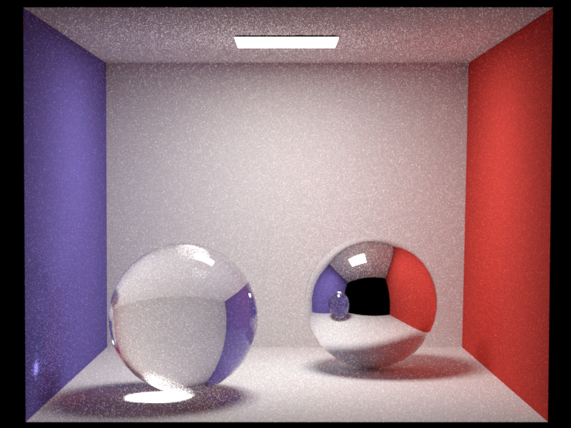
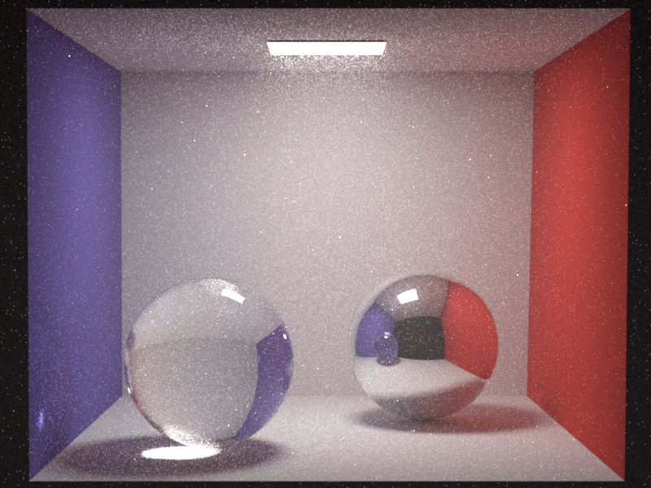
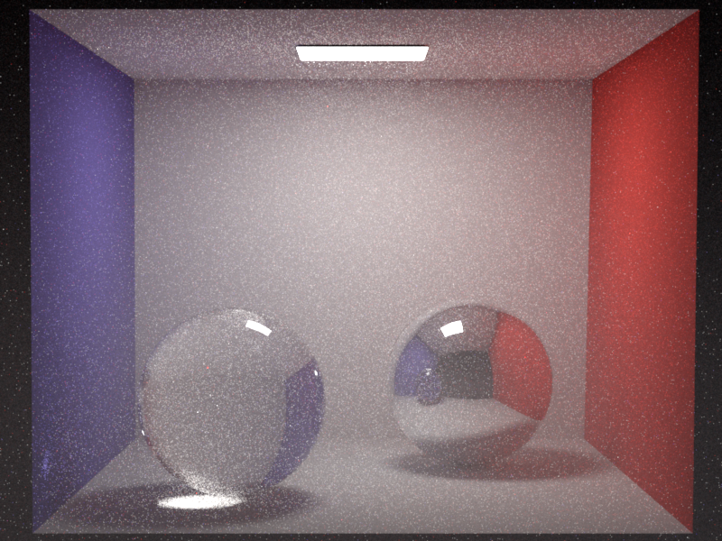
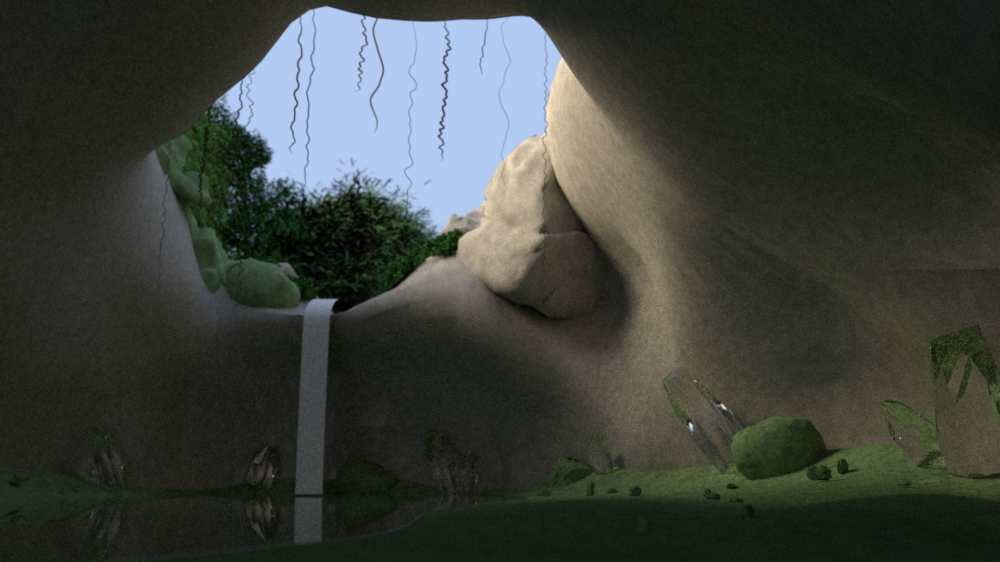
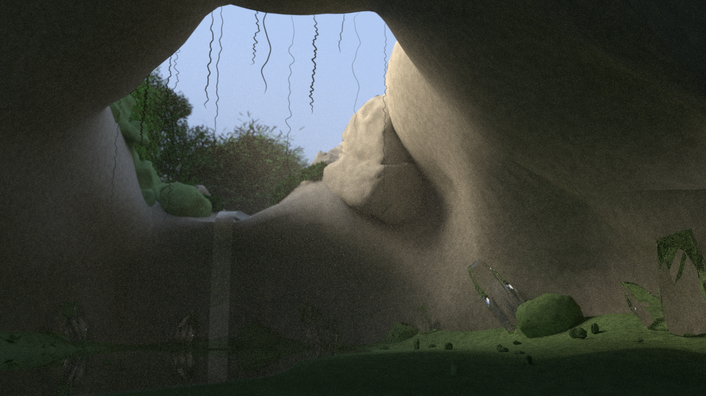
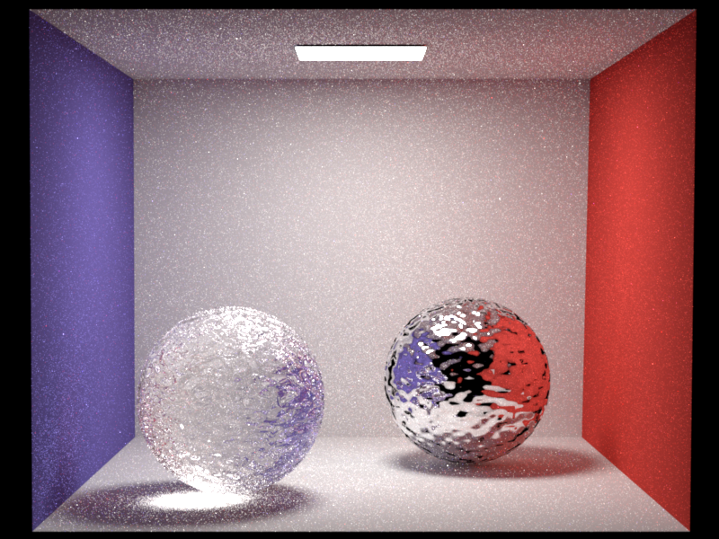
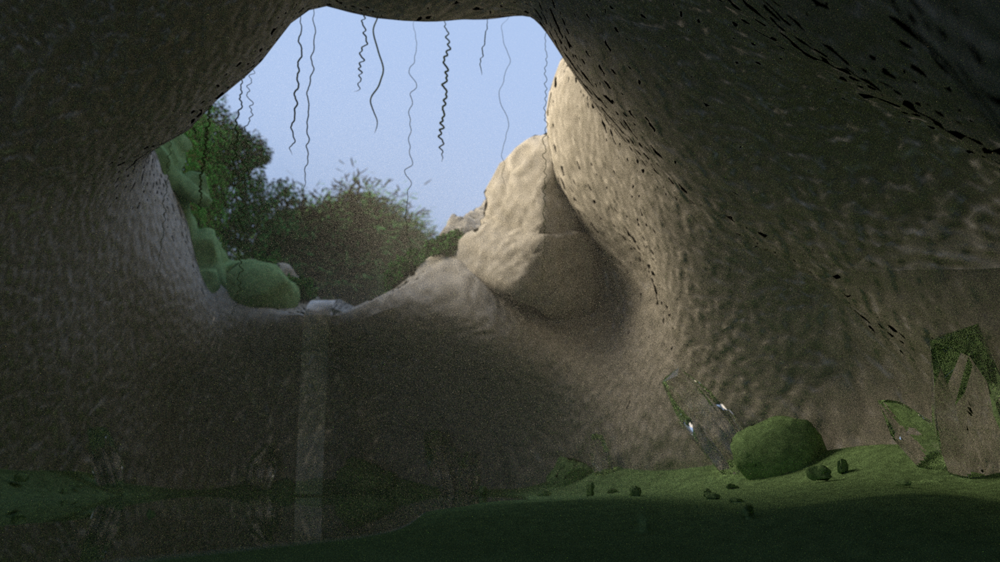
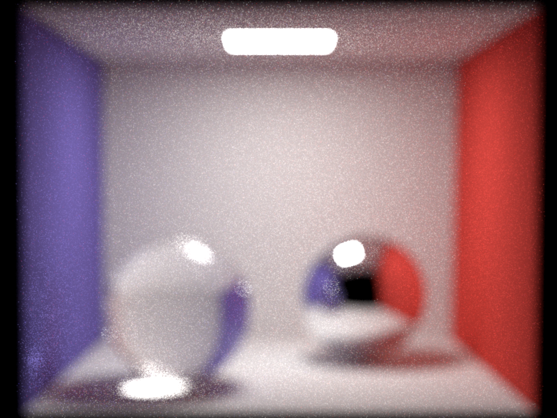
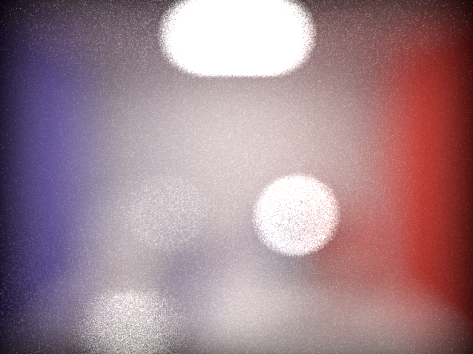

**Final Project: NORI Extension to Render Waterfall Cave Scene**
Student name: Adriana Holtzman
Sciper number: 423181

Feature List
====================================
I have extended the NORI renderer implemented throughout the semester with the following features:
- Homogeneous participating media
- Heterogeneous participating media
- Texture mapping
- Normal mapping
- Environment map lighting
- Depth of field
Homogeneous Participating Media
====================================
Ultimately, homogeneous participating media was not used in the final render because
heterogeneous participating media produces less noise and looks more natural considering
that the waterfall creates mist concentrated around the waterfall base.
Implementation
------------------------------------
Homogeneous Participating Media has two parameters: sigma_s (scattering) and sigma_a (absorption).
Extinction is then sigma_t, calculated as sigma_s + sigma_a.
Using the Beer-Lambert law, the transmittance is calculated as exp(-sigma_t * distance).
Since the transmittance and the sampling PDF cancel out, the throughput weight/albedo
is calculated as sigma_s/sigma_t.
In accordance with Henyey-Greenstein, the phase function uses g as a parameter
representing the anisotropy of the medium. When g = 0, the phase function is isotropic.
When g > 0, light continues in the original direction (forward-scattering), which
is ideal for the cloud of mist in the waterfall cave scene.
Validation
----------
Homogeneous participating media is validated against the cornell box MIS scene.
Comparison of cbox_mis with and without a homogeneous participating medium filling the scene:


Statistical testing (ttest_validate.py) demonstrates that a scene with a homogeneous
vacuum (where sigma_s = sigma_a = 0)
is identical to a scene with no homogeneous participating media.
Heterogeneous Participating Media
====================================
In the final render, heterogeneous participating media was used to model the mist
coming off of the waterfall.
Implementation
------------------------------------
Heterogeneous participating media is implemented using a 3D Gaussian blob with
the following parameters and their respective values to yield the final render:
- center (value="-3, 1, 0")
- radius_xz (value="6")
- radius_y (value="5")
- sigma_s_max (value="0.06")
- sigma_a (value="0")
- g (value="0.6")
The medium varies in density according to the following equation,
$$p(x) = \exp(-(dx^2 + dz^2)/(2r_{xz}^2)-dy^2/(2r_y^2))$$
with derivatives with respect to the blob center.
Delta tracking is used to sample various distances and accept
them as collisions with probability sigma_t(x)/sigma_t_max(x), with
$$\sigma_{tmax}(x) = \sigma_{smax}(x) + \sigma_a(x)$$
$$\sigma_t(x) = \sigma_{tmax}(x) * p(x)$$
Rays are bounded by a sphere at radius $$r = 3 * \sigma$$
Validation
----------
Comparison of cbox_mis with and without a heterogeneous participating medium.
The medium is centered around the bottom of the scene so one can see the gradient across the z axis.

Comparison of final cave seen with and without heterogeneous participating medium (mist).
Note that the waterfall material differs in the two images.


Statistical testing (ttest_validate.py) demonstrates that a scene with
a heterogeneous vacuum (where sigma_s_max = 0)
is identical to a scene with no heterogeneous participating media.
Texture Mapping
====================================
Texture mapping is used to give the stones and mossy surfaces texture in the
final render.
Implementation
------------------------------------
The texture mapping implementation contributes a UV field to the
BDSFQueryRecord struct, which is pulled from the its intersection record.
The texture.h file contains the Texture class, which maps pixels from
a texture image according to the UV coordinates and blends tile edges.
To orient the texture correctly, shading must match the UV coordinate frame
as well, the Frame() function must use the UV tangent space, not the simple
triangle normal.
Validation
----------

Statistical testing (ttest_validate.py) demonstrates that a scene with
a constant gray texture map (all pixels set to 0.5) is identical to a
scene with no texture mapping containing diffuse surfaces with albedo = 0.5.
Normal Mapping
====================================
Normal mapping is used to give the stone cave walls more dimension and stone-like texture
in the final render.
Implementation
------------------------------------
Normal mapping converts RGB textures to tangent space normals.
The normal is encoded using
$$n_{ts} = normalize(2 * rgb - 1)$$
The normalmap.cpp file contains a BSDF wrapper to read normal map
textures from the BSDFQueryRecord, decode n_ts, and transform between
the world space and the tangent space.
Validation
----------
Comparison of cbox scene with and without normal mapping on spherical surfaces.
Here the stone_normal.exr file used for the stone texture is applied.

Comparison of final cave seen with and without normal mapping for the stone wall texture.

Statistical testing (ttest_validate.py) demonstrates that a scene with
a flat normal map (encoding that tangent space normal = (0, 0, 1)) is identical
to the same scene with no normal mapping.
Environment Map Lighting
====================================
Environment map lighting is used to simulate light from the sky in the final render.
Implementation
------------------------------------
The envmap.cpp file contains the envmap emitter, which stores a color and
scale factor. Since an environment map is infinitely far away and has no mesh,
the emitter is accessed using scene->getEnvEmitter().
The emitter is uniformly sampled, and the PDF is 1/4pi.
To add environment map emitters to the MIS path tracer
implementation, the following changes were made:
- Use the envmap radiance if the ray escapes towards the envmap emitter using $$w_{mat} = pdf_{mat}^2 / (pdf_{mat}^2 + pdf_{ems}^2)$$
- Prevent double counting by only adding envmap emitter contribution if lastSpecular=true
Validation
----------
Without scene geometry, all camera rays escape towards the environment map immediately,
as desired. Statistical testing (ttest_validate.py) demonstrates that a scene with
radiance = (0.3, 0.4, 0.6) and scale = 1.5
correctly yields a render with all pixels set to (0.45, 0.60, 0.90).

Depth of Field
====================================
Depth of field creates the illusion that the camera is focused on a point in the scene.
In the final render, this creates a blurring effect around the cave opening and plants outside
the cave, whereas the crystals and rocks inside the cave are in focus.
Implementation
------------------------------------
Depth of field uses a thin lens model (pinhole camera) and is controlled
by the aperture parameter. After computing the pinhole ray direction,
the focus point is calculated by finding the intersection of the ray with
the the focal plane at focalDistance from the camera.
The blur radius grows with aperture (radius), such that aperture = 0 yields
renders with no blur, identical to renders produced without depth of field.
As aperture increases, depth of field is shallower, meaning that objects
out of focus are more blurred.
Validation
----------
aperture = 0.00
aperture = 0.01

aperture = 0.05

Statistical testing (ttest_validate.py) demonstrates that a scene with
aperture = 0.0 is identical to the same scene with no depth of field, as desired.
LLM Usage
====================================
I found Claude to be particularly helpful for solving problems related to the blender -> NORI
conversion, and for manipulating .xml files, since these files are not central to the project.
I needed to edit the .xml files to reintroduce many textures, volumes, and emitters that were lost in the
conversion process. Even to allow the Weinori codebase to convert my scene to NORI, I needed to
edit the io_nori.py python file.
I also used Claude somewhat to write test cases, debug, and explain concepts about feature
implementations.
Citations
==========
- Waterfall Cave scene downloaded from [Open3DLab](https://open3dlab.com/project/1ef0467e-0171-49d5-8834-abc1a9398114/) by @ruadhnait3dx
- Scene converted to NORI .xml format using [Weinori codebase](https://gitlab.tuwien.ac.at/e193-02-rendering-course/wienori-blender-interop)